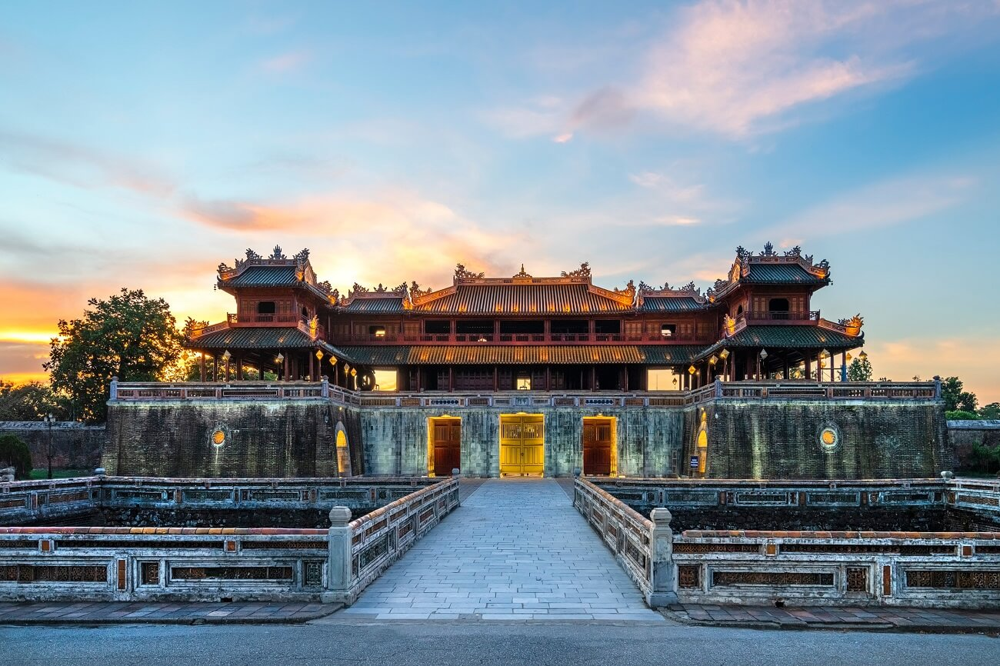

⭐ 4.5 / 5
📍 Địa chỉ: Đường 23/8, phường Phú Xuân, thành phố Huế
🕒 Giờ mở cửa: 7:00 - 17:30 hằng ngày
🎫 Giá vé: Người lớn: 200.000đ
Trẻ em (7-12 tuổi): 40.000đ
( giảm 50% đối với người dân địa phương)
📖 Giới thiệu
Đại Nội Huế là quần thể cung điện và thành quách nổi tiếng thuộc Cố đô Huế, được xây dựng từ năm 1805 dưới triều vua Gia Long. Đây từng là nơi sinh sống và làm việc của 13 vị vua triều Nguyễn – triều đại phong kiến cuối cùng của Việt Nam.
Công trình gồm Hoàng Thành và Tử Cấm Thành với nhiều kiến trúc độc đáo như Ngọ Môn, điện Thái Hòa, Thế Miếu,… Đại Nội không chỉ có giá trị về kiến trúc mà còn lưu giữ nhiều dấu ấn lịch sử quan trọng của dân tộc. Năm 1993, nơi đây được UNESCO công nhận là Di sản Văn hóa Thế giới.
⚠️ Lưu ý
👕 Trang phục lịch sự khi tham quan.
🚯 Không xả rác, không viết vẽ lên di tích.
📷 Chụp ảnh đúng khu vực cho phép.
🚶 Đi nhẹ, giữ trật tự nơi tham quan.
🏯 Các công trình nổi bật
● Ngọ Môn: Cổng chính nổi tiếng của Hoàng Thành.
● Điện Thái Hòa: Nơi vua thiết triều và tổ chức lễ lớn.
● Tử Cấm Thành: Khu vực sinh hoạt của hoàng gia xưa.
● Thế Miếu: Nơi thờ các vua triều Nguyễn.
● Hiển Lâm Các: Công trình kiến trúc mang ý nghĩa tôn vinh công trạng.
📸 Gợi ý tham quan
● Nên đi vào buổi sáng để tránh nắng.
● Thuê áo dài hoặc cổ phục để chụp ảnh đẹp.
● Kết hợp nghe thuyết minh để hiểu thêm lịch sử.